library(tidyverse)
library(brms)
library(rstanarm)
library(broom)
library(broom.mixed)
library(tidybayes)
library(patchwork)
library(scales)
library(ggtext)
library(ggh4x) # For coord_axes_inside()
options(width = 100)
# Plot stuff
clrs <- MetBrewer::met.brewer("Lakota", 6)
theme_set(theme_bw())
# Tell bayesplot to use the Lakota palette for things like pp_check()
# bayesplot::color_scheme_set(clrs)
# Tell bayesplot to use the viridis rocket palette for things like pp_check()
viridisLite::viridis(6, option = "rocket", end = 0.85, direction = -1) |>
# Take off the trailing "FF" in the hex codes
map_chr(~str_sub(., 1, 7)) |>
bayesplot::color_scheme_set()
# Seed stuff
set.seed(1234)
BAYES_SEED <- 1234
# Data
data(cherry_blossom_sample, package = "bayesrules")
running <- cherry_blossom_sample |>
select(runner, age, net) |>
na.omit() |>
mutate(runner_nice = glue::glue("Runner {runner}"),
runner_nice = fct_inorder(runner_nice)) |>
mutate(across(c(net, age),
~scale(., scale = FALSE), .names = "{col}_c"))
extract_attributes <- function(x) {
attributes(x) %>%
set_names(janitor::make_clean_names(names(.))) %>%
as_tibble() %>%
slice(1)
}
unscaled <- running %>%
select(ends_with("_c")) |>
summarize(across(everything(), ~extract_attributes(.))) |>
pivot_longer(everything()) |>
unnest(value) |>
split(~name)
# Access these things like so:
# unscaled$age_c$scaled_centerReading notes
Hierarchical models with predictors
The general setup
In this chapter we’re back to the running data from chapter 15, with race times nested in runners:

We want to model race times (net) based on runner characteristics runner and age age. We’ll use \(Y_{i,j}\) to refer to race times and \(X_{i,j}\) to refer to age, where \(i\) refers individual races and \(j\) refers to runners.
17.1: First steps: Complete pooling
We’ll start by recreating the complete pooling model from chapter 15:
\[ \begin{aligned} \text{Race time}_i &\sim \mathcal{N}(\mu_i, \sigma) \\ \mu_i &= \beta_0 + \beta_1\, \text{Age}_i \\ \\ \beta_0 &\sim \mathcal{N}(0, 35) \\ \beta_1 &\sim \mathcal{N}(0, 2.5) \\ \sigma &\sim \operatorname{Exponential}(1/10) \end{aligned} \]
I’ll just do it in brms here—for rstanarm, go look at either the book or my notes for chapter 15
priors <- c(prior(normal(0, 35), class = Intercept),
prior(normal(0, 2.5), class = b),
prior(exponential(0.1), class = sigma))
model_complete_pooling_brms <- brm(
bf(net ~ age),
data = running,
family = gaussian(),
prior = priors,
chains = 4, cores = 4, iter = 4000, seed = BAYES_SEED,
backend = "cmdstanr", refresh = 0,
file = "17-manual_cache/complete-pooling-brms"
)tidy(model_complete_pooling_brms, effects = "fixed", conf.level = 0.8)
## # A tibble: 2 × 7
## effect component term estimate std.error conf.low conf.high
## <chr> <chr> <chr> <dbl> <dbl> <dbl> <dbl>
## 1 fixed cond (Intercept) 75.2 24.6 43.1 107.
## 2 fixed cond age 0.267 0.447 -0.306 0.850Again, this isn’t the best model ever. It ignores within-runner trends in age. It implies that running time increases by 0.27 minutes for each additional year runners age, but with an 80% credible interval of -0.31–0.85 minutes. That means there’s no substantial relationship between age and race time, even though we’d assume that people get slower over time.
model_complete_pooling_brms |>
add_epred_draws(newdata = tibble(age = seq(min(running$age),
max(running$age),
length.out = 100))) |>
ggplot(aes(x = age, y = .epred)) +
geom_smooth(data = running,
aes(y = net, group = runner), method = "lm", se = FALSE,
color = "grey60", size = 0.5) +
stat_lineribbon(alpha = 0.25, fill = clrs[4], color = clrs[4]) +
labs(x = "Age", y = "Race time")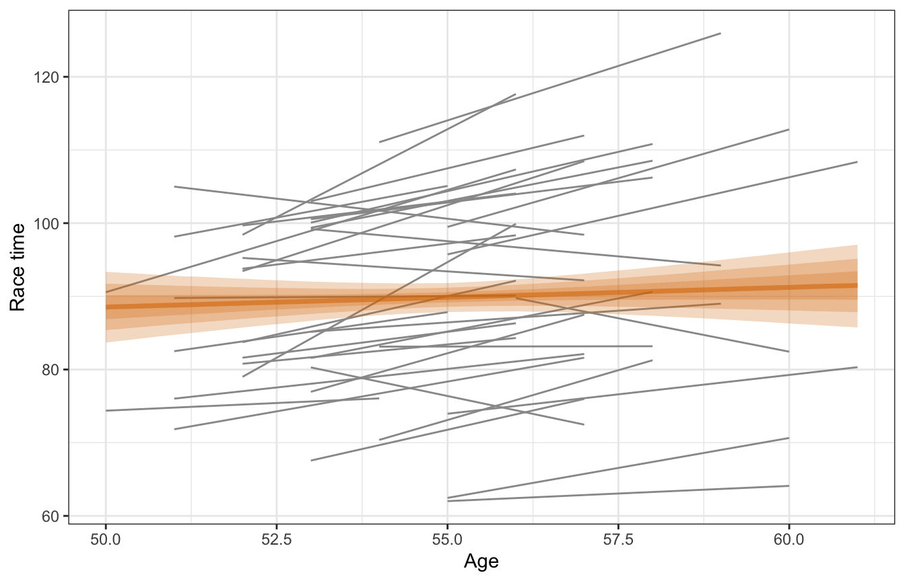
17.2: Hierarchical model with varying intercepts
First we’ll build a model that accounts for varying runner-specific average race times, but ignores runner-specific age trends in race times. That is, we’ll assume one global age trend, but each runner will have their own intercept for that trend based on runner-specific characteristics.
To do this we need to think about all three layers involved in this model:
- Running times within each runner \(j\)
- How average running times vary between runners
- Global parameters like average running time, variance, etc.
Layer 1: Variability within runners
In this first layer, we can say that each runner’s race time varies around their mean (\(\mu_{i,j}\)) with some within-runner variability \(\sigma_y\). In previous chapters, we’ve just looked at \(\mu_j\) as an average (average running time; average popularity), but we can actually model it using a linear model and incorporate age effects, resulting in a model like this:
\[ \begin{aligned} Y_{i_j} &\sim \mathcal{N}(\mu_{i_j}, \sigma_y) \\ \mu_{i_j} &= \beta_{0_j} + \beta_1 X_{i_j} \end{aligned} \]
With this layer of the model, we have a few parameters:
- \(\beta_{0_j}\) is the runner-specific intercept for runner \(j\). It is group-specific.
- \(\beta_1\) is the global coefficient (i.e. no subscripts) for the effect of age on race time. It is global and shared across all runners.
- \(\sigma_y\) is the within-runner variability for the regression model. It measures the strength of the relationship between an individual runner’s age and their race time. It is also global and shared across all runners.
Layer 2: Variability between runners
Next we need to think about the variability between runners. With only random intercepts, we’re just going to worry about \(\beta_0\) in this stage.
\[ \beta_{0_j} \sim \mathcal{N}(\beta_0, \sigma_0) \]
We have two parameters here:
- \(\beta_0\) is the global average intercept across all runners, or the average runner’s race time
- \(\sigma_0\) is the between-runner variability around that global average, or how much race times bounce around the average
Layer 3: Global priors
Finally we need priors for all the global parameters on the righthand side of these different layers:
- \(\beta_0\): Average race time for all runners
- \(\beta_1\): Effect of age on race time for all runners
- \(\sigma_y\): Within-runner variability of race time
- \(\sigma_0\): Between-runner variability of average runner race time
Combined model
Phew. With all these pieces, we can present the final formal model:
\[ \begin{aligned} Y_{i_j} &\sim \mathcal{N}(\mu_{i_j}, \sigma_y) & \text{Race times within runners } j \\ \mu_{i_j} &= \beta_{0_j} + \beta_1 X_{i_j} & \text{Linear model of within-runner variation} \\ \beta_{0_j} &\sim \mathcal{N}(\beta_0, \sigma_0) & \text{Variability in average times between runners} \\ \\ \beta_0 &\sim \text{Some prior} & \text{Global priors} \\ \beta_1 &\sim \text{Some prior} \\ \sigma_y &\sim \text{Some prior} \\ \sigma_0 &\sim \text{Some prior} \end{aligned} \]
Other way of writing all this: offsets
We can also think about the between-runner variation as a series of offsets from the global mean, which I find easier to conceptualize (and the inner workings of brms treat them this way, since running ranef() gets you these offsets). Here, each runner-specific intercept is a combination of the global average and a runner-specific offset from that average:
\[ \beta_{0_j} = \beta_0 + b_{0_j} \]
These offsets come from a normal distribution with some standard deviation \(\sigma_0\):
\[ b_{0_j} \sim \mathcal{N}(0, \sigma_0) \]
We can add these offsets directly to the model:
\[ \begin{aligned} Y_{i_j} &\sim \mathcal{N}(\mu_{i_j}, \sigma_y) & \text{Race times within runners } j \\ \mu_{i_j} &= (\beta_0 + b_{0_j}) + \beta_1 X_{i_j} & \text{Linear model of within-runner variation} \\ b_{0_j} &\sim \mathcal{N}(0, \sigma_0) & \text{Random runner offsets} \\ \\ \beta_0 &\sim \text{Some prior} & \text{Global priors} \\ \beta_1 &\sim \text{Some prior} \\ \sigma_y &\sim \text{Some prior} \\ \sigma_0 &\sim \text{Some prior} \end{aligned} \]
Prior simulation
It’s been a few chapters since we’ve done this, but it’s a good idea to set specific priors and then simulate from them to see if they’re reasonable. (In previous chapters the book used rstanarm’s magical autoscale thing; I chose my own reasonableish priors, but never simulated from them. Also, back in chapter 15 we didn’t center the intercept, but here we will because it makes interpretation and prior setting easier.)
Here’s the reasoning they go through in the book:
- A typical runner in this age group runs between an 8-minute and 12-minute mile, and the race is 10 miles, so average race time should be 80–120 minutes, so we’ll use \(\mathcal{N}(100, 10)\)
- We think that race times increase as age increases. In the book they say it’s probably somewhere between 0.5–4.5 minutes a year, so \(\mathcal{N}(2.5, 1)\)
- For the variability between runners (\(\sigma_0\), or the offsets) and the variability within runners (\(\sigma_y\)), we don’t know much, other than the fact that they have to be positive. We’ll say that they vary moderately with a standard deviation of 10 minutes, so we’ll use \(\operatorname{Exponential}(1/10)\)
That leaves us with this official model:
\[ \begin{aligned} Y_{i_j} &\sim \mathcal{N}(\mu_{i_j}, \sigma_y) & \text{Race times within runners } j \\ \mu_{i_j} &= (\beta_{0c} + b_{0_j}) + \beta_1 X_{i_j} & \text{Linear model of within-runner variation} \\ b_{0_j} &\sim \mathcal{N}(0, \sigma_0) & \text{Random runner offsets} \\ \\ \beta_{0_c} &\sim \mathcal{N}(100, 10) & \text{Prior for global average} \\ \beta_1 &\sim \mathcal{N}(2.5, 1) & \text{Prior for global age effect} \\ \sigma_y &\sim \operatorname{Exponential}(1/10) & \text{Prior for within-runner variability} \\ \sigma_0 &\sim \operatorname{Exponential}(1/10) & \text{Prior for between-runner variability} \end{aligned} \]
And here’s what these priors look like:
p1 <- ggplot() +
stat_function(fun = ~dnorm(., 100, 10),
geom = "area", fill = clrs[1]) +
xlim(c(60, 140)) +
labs(x = "**β<sub>0c</sub>**<br>Global average runner race time") +
theme(axis.title.x = element_markdown(), axis.text.y = element_blank(),
axis.title.y = element_blank(), axis.ticks.y = element_blank(),
panel.grid = element_blank())
p2 <- ggplot() +
stat_function(fun = ~dnorm(., 2.5, 1),
geom = "area", fill = clrs[2]) +
xlim(c(-1, 6)) +
labs(x = "**β<sub>1</sub>**<br>Global effect of age on race time") +
theme(axis.title.x = element_markdown(), axis.text.y = element_blank(),
axis.title.y = element_blank(), axis.ticks.y = element_blank(),
panel.grid = element_blank())
p3 <- ggplot() +
stat_function(fun = ~dexp(., 1/10),
geom = "area", fill = clrs[3]) +
xlim(c(0, 60)) +
labs(x = "**σ<sub>y</sub>** and **σ<sub>0</sub>**<br>Variation *within* individuals' race times<br>and *between* average runner race times") +
theme(axis.title.x = element_markdown(), axis.text.y = element_blank(),
axis.title.y = element_blank(), axis.ticks.y = element_blank(),
panel.grid = element_blank())
p1 | p2 | p3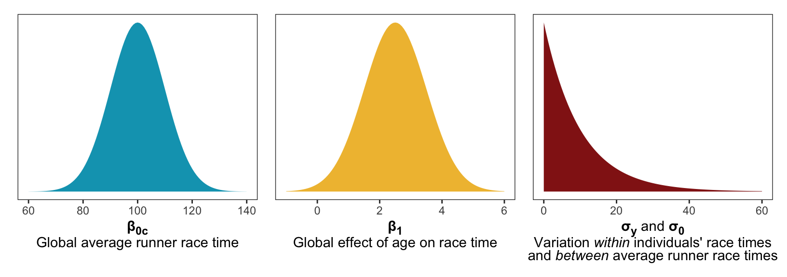
Let’s simulate these priors, both with brms and with rstanarm:
priors <- c(prior(normal(100, 10), class = Intercept),
prior(normal(2.5, 1), class = b),
prior(exponential(0.1), class = sigma),
prior(exponential(0.1), class = sd))
model_running1_brms_prior <- brm(
net ~ age_c + (1 | runner),
data = running,
family = gaussian(),
prior = priors,
sample_prior = "only",
chains = 4, cores = 4, iter = 4000, threads = threading(2), seed = BAYES_SEED,
backend = "cmdstanr", refresh = 0,
file = "17-manual_cache/running1-brms-prior"
)p1 <- running |>
add_predicted_draws(model_running1_brms_prior, ndraws = 100) |>
ggplot(aes(x = .prediction, group = .draw)) +
geom_density(size = 0.25, color = clrs[3]) +
labs(x = "Predicted race time", y = "Density") +
coord_cartesian(xlim = c(-100, 300))
p2 <- running |>
add_linpred_draws(model_running1_brms_prior, ndraws = 6,
seed = 12345) |>
ggplot(aes(x = age, y = net)) +
geom_line(aes(y = .linpred, group = paste(runner, .draw)),
color = clrs[1], size = 0.25) +
labs(x = "Age", y = "Race time") +
coord_cartesian(ylim = c(50, 130)) +
facet_wrap(vars(.draw))
(p1 | p2) + plot_layout(widths = c(0.3, 0.7))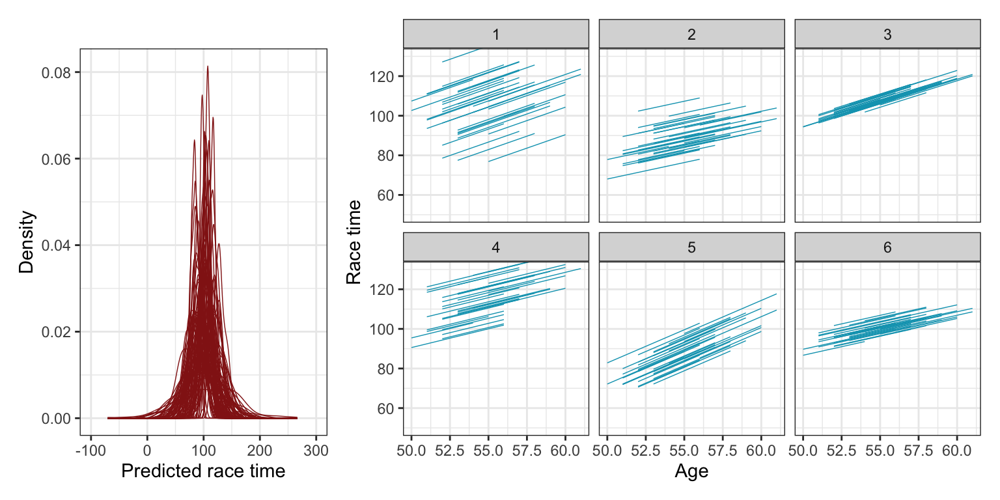
model_running1_rstanarm_prior <- stan_glmer(
net ~ age_c + (1 | runner),
data = running, family = gaussian,
prior_intercept = normal(100, 10),
prior = normal(2.5, 1),
prior_aux = exponential(1, autoscale = TRUE),
prior_covariance = decov(reg = 1, conc = 1, shape = 1, scale = 1),
chains = 4, cores = 4, iter = 5000*2, seed = 84735, refresh = 0,
prior_PD = TRUE)p1 <- running |>
add_predicted_draws(model_running1_rstanarm_prior, ndraws = 100) |>
ggplot(aes(x = .prediction, group = .draw)) +
geom_density(size = 0.25, color = clrs[3]) +
labs(x = "Predicted race time", y = "Density") +
coord_cartesian(xlim = c(-100, 300))
p2 <- running |>
add_linpred_draws(model_running1_rstanarm_prior, ndraws = 6,
seed = 12345) |>
ggplot(aes(x = age, y = net)) +
geom_line(aes(y = .linpred, group = paste(runner, .draw)),
color = clrs[1], size = 0.25) +
labs(x = "Age", y = "Race time") +
coord_cartesian(ylim = c(50, 130)) +
facet_wrap(vars(.draw))
(p1 | p2) + plot_layout(widths = c(0.3, 0.7))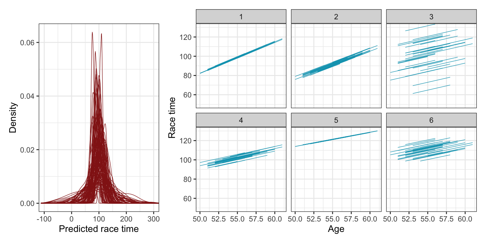
The plots from these prior simulations show us 100 plausible sets of overall race times, as well as six sets of 36 simulated runners. The race time predictions are all plausible-looking, clustered around 100 minutes with most variation between 50 and 150 minutes. The repeated 36 runners also look okay—the relationship between age and race time is consistently positive and never super steep, and there’s good random variation across the intercepts, as expected.
Posterior simulation and analysis
Actual posterior time!
priors <- c(prior(normal(100, 10), class = Intercept),
prior(normal(2.5, 1), class = b),
prior(exponential(0.1), class = sigma),
prior(exponential(0.1), class = sd))
model_running1_brms <- brm(
net ~ age_c + (1 | runner),
data = running,
family = gaussian(),
prior = priors,
chains = 4, cores = 4, iter = 4000, threads = threading(2), seed = BAYES_SEED,
backend = "cmdstanr", refresh = 0,
file = "17-manual_cache/running1-brms"
)model_running1_rstanarm <- stan_glmer(
net ~ age_c + (1 | runner),
data = running, family = gaussian,
prior_intercept = normal(100, 10),
prior = normal(2.5, 1),
prior_aux = exponential(1, autoscale = TRUE),
prior_covariance = decov(reg = 1, conc = 1, shape = 1, scale = 1),
chains = 4, cores = 4, iter = 5000*2, seed = 84735, refresh = 0)Global analysis
First we’ll look at the relationship between running time and age for the typical runner. This involves just the global \(\beta_0\) and the global \(\beta_1\), which don’t have any group-specific elements.
model_running1_brms |>
tidy(effects = c("fixed"), conf.level = 0.8) |>
select(-component)
## # A tibble: 2 × 6
## effect term estimate std.error conf.low conf.high
## <chr> <chr> <dbl> <dbl> <dbl> <dbl>
## 1 fixed (Intercept) 90.8 2.13 88.0 93.5
## 2 fixed age_c 1.30 0.219 1.02 1.58model_running1_rstanarm |>
tidy(effects = c("fixed"),
conf.int = TRUE, conf.level = 0.8)
## # A tibble: 2 × 5
## term estimate std.error conf.low conf.high
## <chr> <dbl> <dbl> <dbl> <dbl>
## 1 (Intercept) 90.6 2.17 87.8 93.5
## 2 age_c 1.30 0.219 1.02 1.58We’ve got two coefficients to interpret:
- \(\beta_0\) is 90.77 is the overall global posterior mean race time for all runners. There’s an 80% chance that it’s between 88.03 and 93.48 minutes.
- \(\beta_1\) shows that a typical runner slows down by a posterior mean of 1.3 minutes each year. There’s an 80% chance that the effect is between 1.02 and 1.58 minutes, which definitely isn’t zero, so we’re pretty confident that there’s a “significant” and substantial age effect.
Here’s what this posterior relationship looks like. Again, this is for a typical runner.
model_running1_brms |>
linpred_draws(running, ndraws = 200, re_formula = NA) |>
ggplot(aes(x = age, y = net)) +
stat_lineribbon(aes(y = .linpred), fill = clrs[4], color = clrs[4], alpha = 0.2) +
labs(x = "Age", y = "Race time")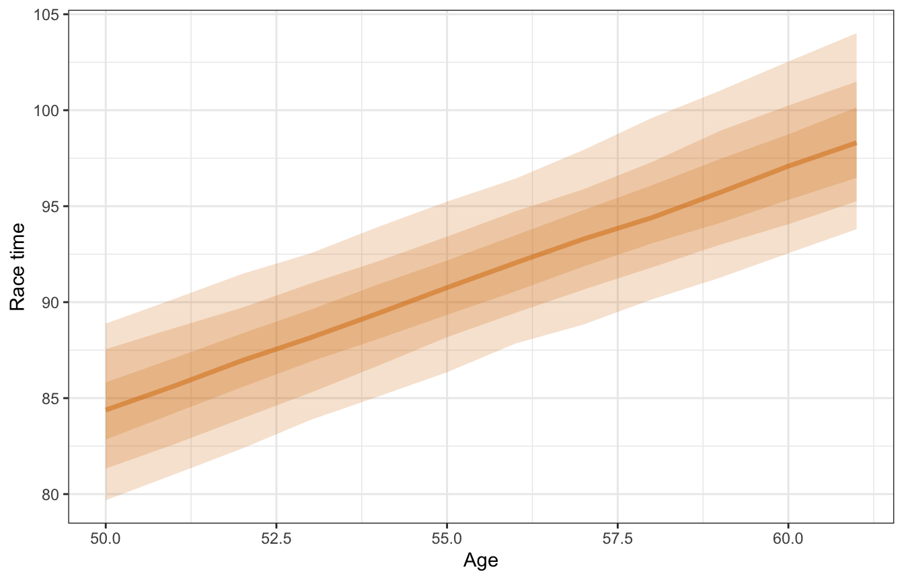
This is neat! When we pooled all the data together, we didn’t have any “significant” effect. After taking runner-specific characteristics into account, we found an actual substantial, practical effect.
Runner-specific analysis
Next we can explore the model’s group details by looking at the different runner specific offsets from the global \(\beta_0\) mean, or the different \(b_{0_j}\) terms:
\[ \beta_0 + b_{0_j} \]
First, we can look at just the intercepts and how much they differ from the global mean. Runner 10 is exceptionally slow compared to the general average; Runners 29 and 30 are exceptionally fast:
global_b0 <- model_running1_brms |>
tidy(effects = c("fixed"), conf.level = 0.8) |>
filter(term == "(Intercept)")
running1_runner_offsets <- model_running1_brms |>
spread_draws(b_Intercept, r_runner[runner,]) |>
mutate(runner_intercept = b_Intercept + r_runner) |>
ungroup() |>
mutate(runner = fct_reorder(factor(runner), runner_intercept, .fun = mean))
# Instead of manually adding the offsets to the intercept, we could also use
# posterior_linpred() to calculate the linear predictions for each runner when
# all other covariates are set to 0; the results are identical
# running1_runner_offsets <- model_running1_brms |>
# linpred_draws(tibble(runner = unique(running$runner),
# age_c = 0)) |>
# ungroup() |>
# mutate(runner = fct_reorder(factor(runner), .linpred, .fun = mean))
running1_runner_offsets |>
ggplot(aes(x = runner_intercept, y = runner)) +
annotate(geom = "rect", ymin = -Inf, ymax = Inf,
xmin = global_b0$conf.low, xmax = global_b0$conf.high,
fill = clrs[2], alpha = 0.4) +
geom_vline(xintercept = global_b0$estimate, color = clrs[2]) +
stat_pointinterval(color = clrs[3])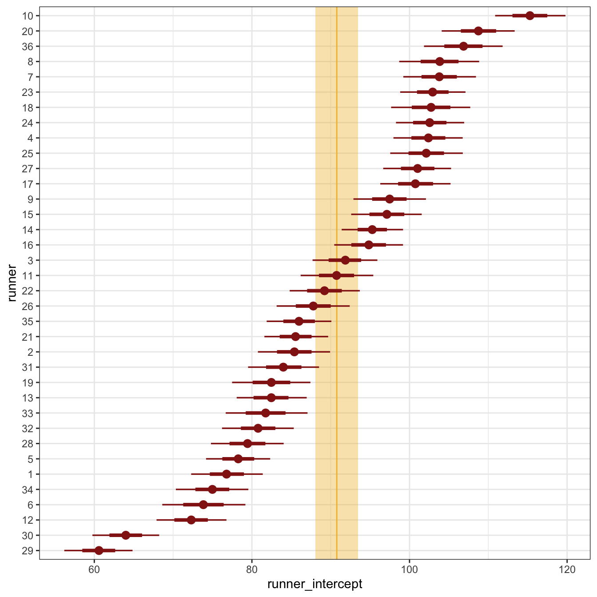
Next we can see how these runner-specific offsets influence the age-race time relationship. In the book they compare posterior linear predictions for runners 4 and 5. Just shifting the intercept around helps a lot with model fit!
running |>
filter(runner %in% c("4", "5")) |>
add_linpred_draws(model_running1_brms, ndraws = 100) |>
ggplot(aes(x = age, y = net)) +
geom_line(aes(y = .linpred, group = paste(runner, .draw), color = runner),
size = 0.3, alpha = 0.2) +
geom_point(aes(color = runner)) +
scale_color_manual(values = c(clrs[3], clrs[6])) +
labs(x = "Age", y = "Race time", color = "Runner")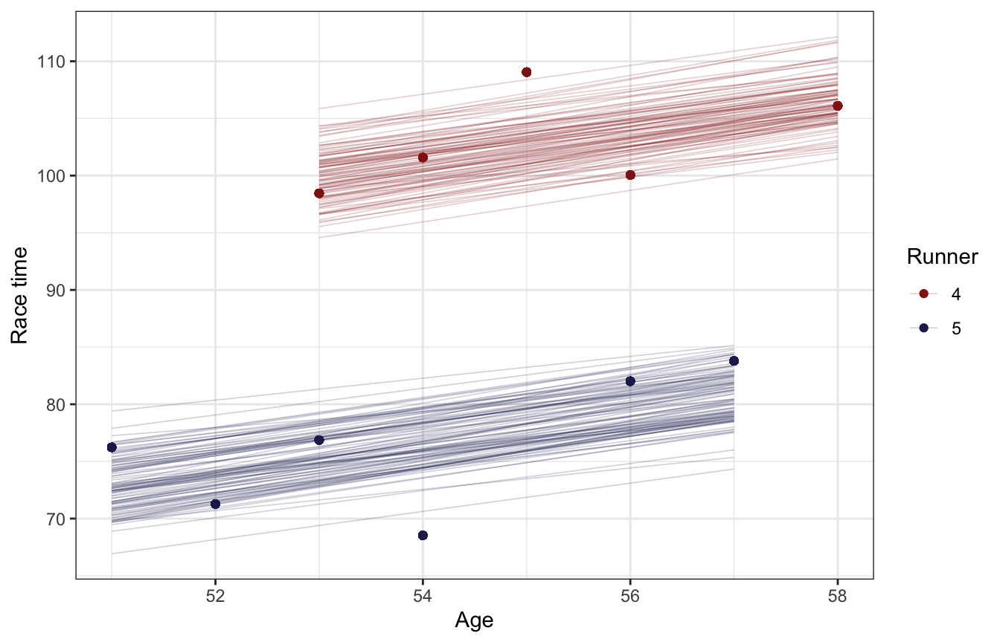
Finally, the book plots the posterior median slope and intercepts for all 36 runners. Most runners’ lines are clustered around the global median, as expected:
running1_all_runner_lines <- model_running1_brms |>
linpred_draws(expand_grid(runner = unique(running$runner),
age_c = c(50 - unscaled$age_c$scaled_center,
61 - unscaled$age_c$scaled_center))) |>
group_by(runner, age_c) |>
median_qi(.linpred) |>
mutate(age = age_c + unscaled$age_c$scaled_center)
running1_global_trend <- running1_all_runner_lines |>
group_by(age_c) |>
median_qi(.linpred) |>
mutate(age = age_c + unscaled$age_c$scaled_center)
running1_all_runner_lines |>
ggplot(aes(x = age, y = .linpred)) +
geom_line(aes(group = runner), color = "grey70") +
geom_line(data = running1_global_trend, color = clrs[5], size = 2) +
coord_cartesian(ylim = c(50, 135))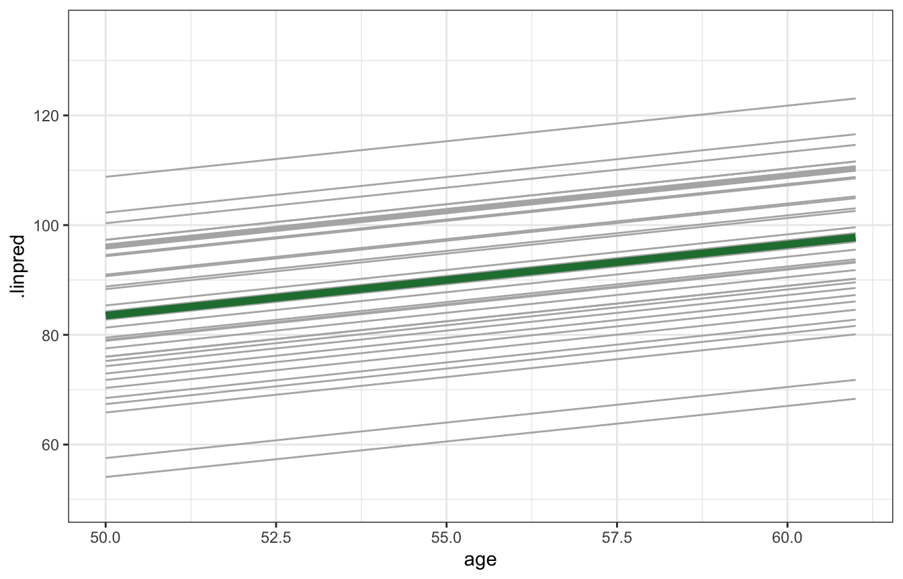
Within- and between-runner variability
Finally we can look at the two \(\sigma\) terms: \(\sigma_y\) (sd__Observation) for the variability within runners and \(\sigma_0\) (sd__(Intercept) for the runner group) for the variability between runners’ baseline averages, or the variability around the \(b_{0_j}\) offsets.
model_running1_brms |>
tidy(effects = c("ran_pars"), conf.level = 0.8) |>
select(-component)
## # A tibble: 2 × 7
## effect group term estimate std.error conf.low conf.high
## <chr> <chr> <chr> <dbl> <dbl> <dbl> <dbl>
## 1 ran_pars runner sd__(Intercept) 13.5 1.65 11.5 15.6
## 2 ran_pars Residual sd__Observation 5.21 0.306 4.83 5.62model_running1_rstanarm |>
tidy(effects = c("ran_pars"),
conf.int = TRUE, conf.level = 0.8)
## # A tibble: 2 × 3
## term group estimate
## <chr> <chr> <dbl>
## 1 sd_(Intercept).runner runner 13.4
## 2 sd_Observation.Residual Residual 5.25The \(\sigma_y\) (or sd__Observation) term here is 5.21, which means that within any runner, their race times vary by 5 minutes around their individual race time average.
\(\sigma_0\) (or sd__(Intercept) for the runner group) on the other hand, is 13.48, which means that average runner speeds vary or bounce around by 13 minutes across runners. There’s thus more variation between runners than within individual runners.
If we square these terms and make ratios of the values, we can see how much of the total model variation comes from within-runner and between-runner variation:
model_running1_brms |>
tidy(effects = c("ran_pars"), conf.int = FALSE) |>
select(-component, -effect, -std.error) |>
mutate(sigma_2 = estimate^2) |>
mutate(props = sigma_2 / sum(sigma_2))
## # A tibble: 2 × 5
## group term estimate sigma_2 props
## <chr> <chr> <dbl> <dbl> <dbl>
## 1 runner sd__(Intercept) 13.5 182. 0.870
## 2 Residual sd__Observation 5.21 27.2 0.130Neat! 87% of the variability in race times comes from between-runner differences, while 13% comes from variations within individual runners.
We can also use performance::icc() to calculate this ratio automatically:
performance::icc(model_running1_brms, by_group = TRUE)
## # ICC by Group
##
## Group | ICC
## --------------
## runner | 0.87017.3: Hierarchical model with varying intercepts & slopes
Fun times so far, and even funner times ahead.
However, we’ve just been working with varying intercepts, assuming that the relationship between age and speed is the same for each runner. In reality, though, that’s not the case. Some runners slow down faster or slower over time—some even get faster as they age. If we compare this random-intercepts-only model to the actual trends in the data we can see that we’ve missed those varying runner effects—every runner in the right panel here is perfectly parallel. To capture these different age-race relationships within runners, we can use both random intercepts and random slopes.
p1 <- running |>
ggplot(aes(x = age, y = net, group = runner)) +
geom_smooth(method = "lm", se = FALSE, size = 0.5, color = clrs[1]) +
coord_cartesian(ylim = c(60, 125)) +
labs(x = "Age", y = "Race time",
title = "Observed data",
subtitle = "Basic per-runner OLS models")
p2 <- running |>
add_linpred_draws(model_running1_brms, ndraws = 100) |>
summarize(.linpred = mean(.linpred)) |>
ggplot(aes(x = age, y = net)) +
geom_line(aes(y = .linpred, group = runner),
size = 0.5, color = clrs[3]) +
coord_cartesian(ylim = c(60, 125)) +
labs(x = "Age", y = "Race time",
title = "Random intercepts only",
subtitle = "Posterior means")
p1 | p2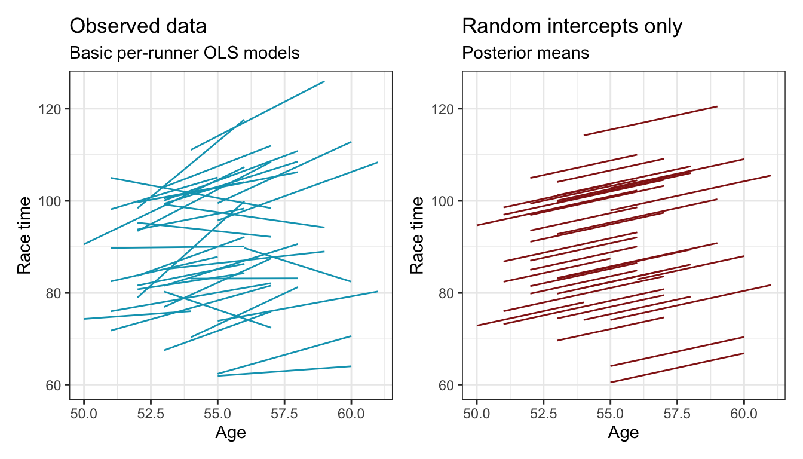
Model building
Getting random slopes into the model requires some tinkering with the formal model structure
With layer 1 (within-runner variation), we now use \(\beta_{1_j}\) instead of the global \(\beta_1\) term from before, showing that each runner \(j\) gets their own \(\beta_1\):
\[ \begin{aligned} Y_{i_j} &\sim \mathcal{N}(\mu_{i_j}, \sigma_y) \\ \mu_{i_j} &= \beta_{0_j} + \beta_{1_j} X_{i_j} \end{aligned} \]
In the non-offset-based syntax, we can then say that both \(\beta_{0_j}\) and \(\beta_{1_j}\) follow some random distribution with coefficient-specific variance (\(\sigma_0\) and \(\sigma_1\) now instead of just \(\sigma_0\)):
\[ \begin{aligned} \beta_{0_j} \sim \mathcal{N}(\beta_0, \sigma_0) \\ \beta_{1_j} \sim \mathcal{N}(\beta_1, \sigma_1) \end{aligned} \]
Life gets a little trickier with these terms, though, because \(\beta_{0_j}\) and \(\beta_{1_j}\) are correlated and move together within each runner. So instead of writing the models for \(\beta_{0_j}\) and \(\beta_{1_j}\) as two separate lines, we have to consider them together:
\[ \left( \begin{array}{c} \beta_{0_j} \\ \beta_{1_j} \end{array} \right) \sim \mathcal{N} \left( \left( \begin{array}{c} \beta_0 \\ \beta_1 \\ \end{array} \right) , \,\Sigma \right) \]
Written like this, we can draw values for \(\beta_{0_j}\) and \(\beta_{1_j}\) from a multivariate (or joint) normal distribution with a shared covariance \(\Sigma\), which includes both the variability and the correlation between \(\beta_{0_j}\) and \(\beta_{1_j}\):
\[ \Sigma = \left( \begin{array}{cc} \text{Var}_{\beta_0} & \text{Cov}_{\beta_0, \beta_1} \\ \text{Cov}_{\beta_0, \beta_1} & \text{Var}_{\beta_1} \end{array} \right) \]
We can transform the variance term into Greek letters by replacing \(\text{Var}_{\beta_0}\) with \(\sigma^2_{\beta_0}\). The covariance term can change to \(\sigma_{\beta_0, \beta_1}\), but that’s a little trickier to work with because thinking about covariance values is less intuitive than thinking about standard deviations or correlation. So to make life easier, we can do a little algebra to rewrite the covariance as a function of the correlation \(\rho_{\beta_0, \beta_1}\) and the two standard deviations \(\sigma_{\beta_0}\) and \(\sigma_{\beta_1}\).
\[ \begin{aligned} \rho_{\beta_0, \beta_1} &= \frac{\sigma_{\beta_0, \beta_1}}{\sigma_{\beta_0} \sigma_{\beta_0}} \\ \sigma_{\beta_0, \beta_1} &= \rho_{\beta_0, \beta_1}\, \sigma_{\beta_0} \sigma_{\beta_0} \end{aligned} \]
That leaves us with this fun mess (with the lower triangle omitted because it’s repeated, and because that’s what @ODeaNobleNakagawa:2021 do in their neat overview-of-multilevel-models paper):
\[ \Sigma = \left( \begin{array}{cc} \sigma^2_{\beta_0} & \rho_{\beta_0, \beta_1}\, \sigma_{\beta_0} \sigma_{\beta_1} \\ \dots & \sigma^2_{\beta_1} \end{array} \right) \]
In Bayes Rules! they simplify this more by getting rid of the \(\beta\)s in the subscripts:
\[ \Sigma = \left( \begin{array}{cc} \sigma^2_{0} & \rho_{0, 1}\, \sigma_{0} \sigma_{1} \\ \dots & \sigma^2_{1} \end{array} \right) \]
This matrix has the two \(\sigma_0\) and \(\sigma_1\) terms that control the variability in \(\beta_{0_j}\) and \(\beta_{1_j}\), and it also has a messy new \(\rho_{0, 1}\, \sigma_{0} \sigma_{1}\) term for the correlation between \(\beta_{0_j}\) and \(\beta_{1_j}\)
In Bayes Rules! they show some plots with simulated data that demonstrate what this correlation actually means. They don’t include the code for it, so I’ll make up my own version here:
withr::with_seed(123, {
rho_plots <- tibble(rho = c(-0.99, 0, 0.99)) |>
mutate(title = glue::glue("ρ = {rho}"),
subtitle = c("Strong negative correlation\nbetween slope and intercept",
"No correlation\nbetween slope and intercept",
"Strong positive correlation\nbetween slope and intercept")) |>
mutate(Sigma = map(rho, ~matrix(c(1, .x, .x, 1), 2, 2))) |>
mutate(data = map(Sigma, ~{
MASS::mvrnorm(n = 100, mu = c(2, 3), Sigma = .x) |>
as_tibble() |>
rename(b0 = V1, b1 = V2)
})) |>
mutate(plot = pmap(list(data, title, subtitle), ~{
ggplot(..1) +
geom_abline(aes(intercept = b0, slope = b1, color = b0),
size = 0.3) +
scale_color_viridis_c(option = "rocket", begin = 0.1, end = 0.85,
limits = c(-1, 5)) +
labs(title = ..2, subtitle = ..3, color = "β<sub>0</sub>") +
lims(x = c(0, 3), y = c(0, 10)) +
coord_axes_inside() +
theme(axis.line = element_line(),
legend.title = element_markdown())
}))
})
wrap_plots(rho_plots$plot) +
plot_layout(guides = "collect")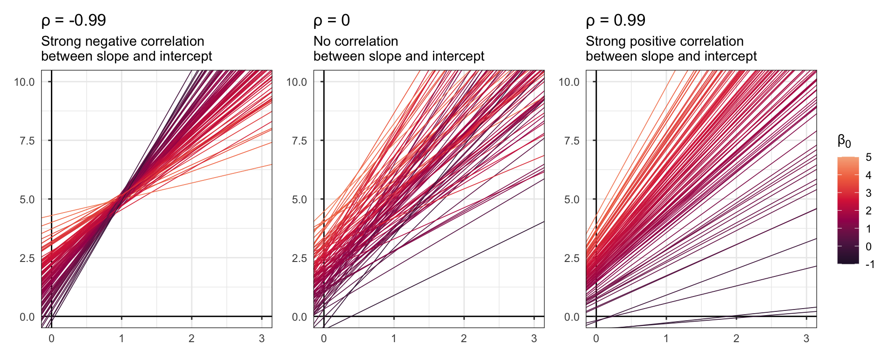
When \(\rho\) is negative, bigger intercepts have smaller slopes. In the context of runners, this would mean that individual runners who have longer baseline race time averages would see less of an age effect. When \(\rho\) is negative, bigger intercepts have steeper slopes—individual runners with longer baseline race times would see a stronger age effect.
SOO with all that, here’s what the final formal model with varying intercepts and slopes looks like:
\[ \begin{aligned} Y_{i_j} &\sim \mathcal{N}(\mu_{i_j}, \sigma_y) & \text{Race times within runners } j \\ \mu_{i_j} &= \beta_{0_j} + \beta_{1_j} X_{i_j} & \text{Linear model of within-runner variation} \\ \left( \begin{array}{c} \beta_{0_j} \\ \beta_{1_j} \end{array} \right) &\sim \mathcal{N} \left( \left( \begin{array}{c} \beta_0 \\ \beta_1 \\ \end{array} \right) , \, \left( \begin{array}{cc} \sigma^2_{0} & \rho_{0, 1}\, \sigma_{0} \sigma_{1} \\ \dots & \sigma^2_{1} \end{array} \right) \right) & \text{Variability in average runner intercepts and slopes} \\ \\ \beta_{0_c} &\sim \mathcal{N}(100, 10) & \text{Prior for global average} \\ \beta_1 &\sim \mathcal{N}(2.5, 1) & \text{Prior for global age effect} \\ \sigma_y &\sim \operatorname{Exponential}(1/10) & \text{Prior for within-runner variability} \\ \sigma_0 &\sim \operatorname{Exponential}(1/10) & \text{Prior for between-runner intercept variability} \\ \sigma_1 &\sim \operatorname{Exponential}(1/10) & \text{Prior for between-runner slope variability} \\ \rho &\sim \operatorname{LKJ}(1) & \text{Prior for between-runner variability} \end{aligned} \]
We can also write this using offset-based notation:
\[ \begin{aligned} Y_{i_j} &\sim \mathcal{N}(\mu_{i_j}, \sigma_y) & \text{Race times within runners } j \\ \mu_{i_j} &= (\beta_{0c} + b_{0_j}) + (\beta_1 + b_{1_j}) X_{i_j} & \text{Linear model of within-runner variation} \\ \left( \begin{array}{c} b_{0_j} \\ b_{1_j} \end{array} \right) &\sim \mathcal{N} \left( \left( \begin{array}{c} 0 \\ 0 \\ \end{array} \right) , \, \left( \begin{array}{cc} \sigma^2_{0} & \rho_{0, 1}\, \sigma_{0} \sigma_{1} \\ \dots & \sigma^2_{1} \end{array} \right) \right) & \text{Variability in average runner intercepts and slopes} \\ \\ \beta_{0_c} &\sim \mathcal{N}(100, 10) & \text{Prior for global average} \\ \beta_1 &\sim \mathcal{N}(2.5, 1) & \text{Prior for global age effect} \\ \sigma_y &\sim \operatorname{Exponential}(1/10) & \text{Prior for within-runner variability} \\ \sigma_0 &\sim \operatorname{Exponential}(1/10) & \text{Prior for between-runner intercept variability} \\ \sigma_1 &\sim \operatorname{Exponential}(1/10) & \text{Prior for between-runner slope variability} \\ \rho &\sim \operatorname{LKJ}(1) & \text{Prior for between-runner variability} \end{aligned} \]
There’s one new thing here in the priors—we need to set a prior for the correlation of the slopes and intercepts, or \(\rho_{0,1}\). This can get really complex. Bayes Rules! has a whole optional section showing how it’s possible to decompose the \(\Sigma\) covariance matrix into three component parts:
- \(R\), or a regularization hyperparameter
- \(\tau\), or the total standard deviation in the intercepts and slopes
- \(\pi_0\) and \(\pi_1\), or the relative proportion of the variability between groups that comes from differing intercepts and slopes
That’s a ton of fine tuning! You can set these priors in rstanarm like so:
stan_glmer(
...
prior_covariance = decov(reg = 1, conc = 1, shape = 1, scale = 1),
...
)brms makes this a lot easier (though the lkj() prior lets you set all these decomposed parts too!) and only makes you set a prior for the \(\rho\) term by itself, or the cor class here:
get_prior(
net ~ age_c + (1 + age_c | runner),
data = running,
family = gaussian()
)
## prior class coef group resp dpar nlpar lb ub source
## (flat) b default
## (flat) b age_c (vectorized)
## lkj(1) cor default
## lkj(1) cor runner (vectorized)
## student_t(3, 89.4, 14.2) Intercept default
## student_t(3, 0, 14.2) sd 0 default
## student_t(3, 0, 14.2) sd runner 0 (vectorized)
## student_t(3, 0, 14.2) sd age_c runner 0 (vectorized)
## student_t(3, 0, 14.2) sd Intercept runner 0 (vectorized)
## student_t(3, 0, 14.2) sigma 0 defaultThis just needs to be a value between -1 and 1, like a regular correlation coefficient. By default, brms uses an LKJ distribution, which is a strange beast that ranges between -1 and 1. There’s no built-in function like dlkj(), and I haven’t found a comparable function in other packages like extraDistr, but tidybayes supports it!
The LKJ distribution takes one hyperparameter \(\eta\) that controls the shape:
- When \(\eta < 1\), extreme correlations are more likely
- When \(\eta = 1\), all correlations are equally likely
- When \(\eta > 1\), central correlations are more likely, and the larger the \(\eta\), the narrower the distribution is around 0
tibble(eta = c(0.5, 1, 5, 15)) |>
mutate(prior = glue::glue("lkjcorr({eta})")) |>
mutate(prior_nice = fct_inorder(glue::glue("LKJ(η = {eta})"))) |>
parse_dist(prior) |>
marginalize_lkjcorr(K = 2) |> # K = dimension of correlation matrix; ours is 2x2 here
ggplot(aes(y = 0, dist = .dist, args = .args)) +
stat_slab(fill = clrs[5]) +
labs(x = "**ρ**<br>Correlation between β<sub>0</sub> and β<sub>1</sub>") +
theme(axis.title.x = element_markdown(), axis.text.y = element_blank(),
axis.title.y = element_blank(), axis.ticks.y = element_blank(),
panel.grid = element_blank()) +
facet_wrap(vars(prior_nice), nrow = 1)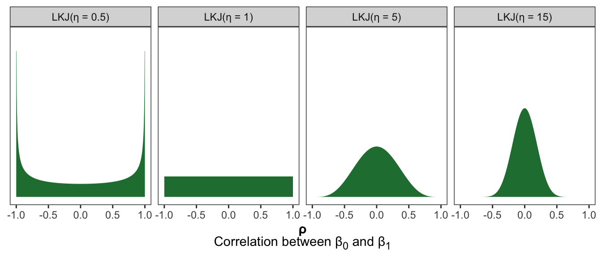
Posterior simulation and analysis
We’ll skip the prior simulation and go right to model fitting and exploring the posterior.
Bump up the adapt_delta to help with convergence here.
priors <- c(prior(normal(100, 10), class = Intercept),
prior(normal(2.5, 1), class = b),
prior(exponential(0.1), class = sigma),
prior(exponential(0.1), class = sd),
prior(lkj(1), class = cor))
model_running2_brms <- brm(
net ~ age_c + (1 + age_c | runner),
data = running,
family = gaussian(),
prior = priors,
chains = 4, cores = 4, iter = 4000, threads = threading(2), seed = BAYES_SEED,
backend = "cmdstanr", refresh = 0, control = list(adapt_delta = 0.9),
file = "17-manual_cache/running2-brms"
)model_running2_rstanarm <- stan_glmer(
net ~ age_c + (1 + age_c | runner),
data = running, family = gaussian,
prior_intercept = normal(100, 10),
prior = normal(2.5, 1),
prior_aux = exponential(1, autoscale = TRUE),
prior_covariance = decov(reg = 1, conc = 1, shape = 1, scale = 1),
chains = 4, cores = 4, iter = 5000*2, seed = 84735, refresh = 0, adapt_delta = 0.9)Holy moly we have a bunch of things we can work with now—78 different parameters! 36 runner-specific intercept offsets, 36 runner-specific slope offsets, and 6 global terms.
get_variables(model_running2_brms)
## [1] "b_Intercept" "b_age_c" "sd_runner__Intercept"
## [4] "sd_runner__age_c" "cor_runner__Intercept__age_c" "sigma"
## [7] "r_runner[1,Intercept]" "r_runner[2,Intercept]" "r_runner[3,Intercept]"
## [10] "r_runner[4,Intercept]" "r_runner[5,Intercept]" "r_runner[6,Intercept]"
## [13] "r_runner[7,Intercept]" "r_runner[8,Intercept]" "r_runner[9,Intercept]"
## [16] "r_runner[10,Intercept]" "r_runner[11,Intercept]" "r_runner[12,Intercept]"
## [19] "r_runner[13,Intercept]" "r_runner[14,Intercept]" "r_runner[15,Intercept]"
## [22] "r_runner[16,Intercept]" "r_runner[17,Intercept]" "r_runner[18,Intercept]"
## [25] "r_runner[19,Intercept]" "r_runner[20,Intercept]" "r_runner[21,Intercept]"
## [28] "r_runner[22,Intercept]" "r_runner[23,Intercept]" "r_runner[24,Intercept]"
## [31] "r_runner[25,Intercept]" "r_runner[26,Intercept]" "r_runner[27,Intercept]"
## [34] "r_runner[28,Intercept]" "r_runner[29,Intercept]" "r_runner[30,Intercept]"
## [37] "r_runner[31,Intercept]" "r_runner[32,Intercept]" "r_runner[33,Intercept]"
## [40] "r_runner[34,Intercept]" "r_runner[35,Intercept]" "r_runner[36,Intercept]"
## [43] "r_runner[1,age_c]" "r_runner[2,age_c]" "r_runner[3,age_c]"
## [46] "r_runner[4,age_c]" "r_runner[5,age_c]" "r_runner[6,age_c]"
## [49] "r_runner[7,age_c]" "r_runner[8,age_c]" "r_runner[9,age_c]"
## [52] "r_runner[10,age_c]" "r_runner[11,age_c]" "r_runner[12,age_c]"
## [55] "r_runner[13,age_c]" "r_runner[14,age_c]" "r_runner[15,age_c]"
## [58] "r_runner[16,age_c]" "r_runner[17,age_c]" "r_runner[18,age_c]"
## [61] "r_runner[19,age_c]" "r_runner[20,age_c]" "r_runner[21,age_c]"
## [64] "r_runner[22,age_c]" "r_runner[23,age_c]" "r_runner[24,age_c]"
## [67] "r_runner[25,age_c]" "r_runner[26,age_c]" "r_runner[27,age_c]"
## [70] "r_runner[28,age_c]" "r_runner[29,age_c]" "r_runner[30,age_c]"
## [73] "r_runner[31,age_c]" "r_runner[32,age_c]" "r_runner[33,age_c]"
## [76] "r_runner[34,age_c]" "r_runner[35,age_c]" "r_runner[36,age_c]"
## [79] "lprior" "lp__" "accept_stat__"
## [82] "treedepth__" "stepsize__" "divergent__"
## [85] "n_leapfrog__" "energy__"Like we did with the random intercepts model, we’ll look at all of these in turn.
Global analysis
First we’ll look at the relationship between running time and age for the typical runner, or just the global \(\beta_0\) and the global \(\beta_1\).
model_running2_brms |>
tidy(effects = c("fixed"), conf.level = 0.8) |>
select(-component)
## # A tibble: 2 × 6
## effect term estimate std.error conf.low conf.high
## <chr> <chr> <dbl> <dbl> <dbl> <dbl>
## 1 fixed (Intercept) 90.9 2.28 88.1 93.8
## 2 fixed age_c 1.36 0.253 1.05 1.68model_running2_rstanarm |>
tidy(effects = c("fixed"),
conf.int = TRUE, conf.level = 0.8)
## # A tibble: 2 × 5
## term estimate std.error conf.low conf.high
## <chr> <dbl> <dbl> <dbl> <dbl>
## 1 (Intercept) 90.9 2.11 88.2 93.7
## 2 age_c 1.37 0.263 1.04 1.72Interpretation time:
- \(\beta_0\) is 90.94 is the overall global posterior mean race time for all runners. There’s an 80% chance that it’s between 88.1 and 93.76 minutes.
- \(\beta_1\) shows that a typical runner slows down by a posterior mean of 1.36 minutes each year. There’s an 80% chance that the effect is between 1.05 and 1.68 minutes, which is “significant” and substantial. It’s also really close to the 1.3-year effect we found with just random intercepts.
Let’s plot it for fun. Again, this is for a typical runner and incorporates no group-level information at all (hence re_formula = NA))
model_running2_brms |>
linpred_draws(running, ndraws = 200, re_formula = NA) |>
ggplot(aes(x = age, y = net)) +
stat_lineribbon(aes(y = .linpred), fill = clrs[4], color = clrs[4], alpha = 0.2) +
labs(x = "Age", y = "Race time")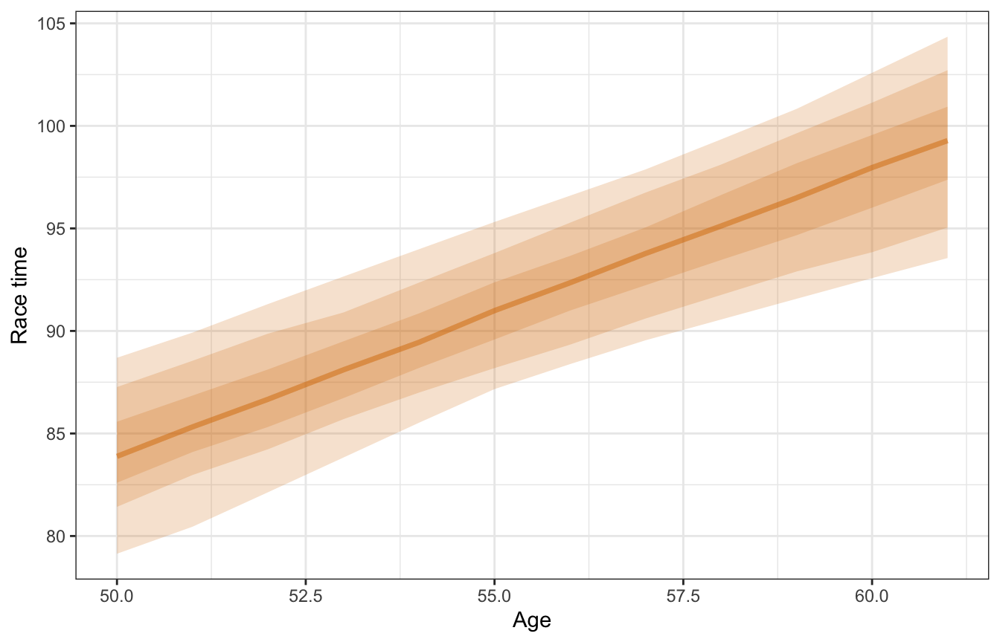
Runner-specific analysis
We could hypothetically extract and visualize all the runner-specific offsets to the slopes and intercepts (with ranef()), but we’ll skip that here and instead look at the runner-specific lines. Each line here is constructed using a unique set of \(\beta_{0_j}\) and \(\beta_{1_j}\) terms for each runner, each based around the global \(\beta_0\) and \(\beta_1\) estimates. To help with the intuition, here are the lines some of the runners:
model_running2_brms |>
spread_draws(b_Intercept, b_age_c, r_runner[runner, term]) |>
pivot_wider(names_from = "term", values_from = r_runner) |>
mutate(runner_intercept = b_Intercept + Intercept,
runner_age = b_age_c + age_c) |>
group_by(runner) |>
summarize(across(c(runner_intercept, runner_age), ~median(.)))
## # A tibble: 36 × 3
## runner runner_intercept runner_age
## <int> <dbl> <dbl>
## 1 1 76.7 0.584
## 2 2 85.3 1.21
## 3 3 91.4 1.11
## 4 4 102. 1.56
## 5 5 78.3 1.20
## 6 6 75.2 0.892
## 7 7 104. 1.64
## 8 8 104. 1.76
## 9 9 96.6 1.63
## 10 10 114. 2.21
## # … with 26 more rowsWe can plot these to see them easier. In the book they plot these with geom_abline() to go across the whole range of the plot. We can also limit the lines to each runners’ observed ages:
running2_all_runner_lines <- model_running2_brms |>
linpred_draws(expand_grid(runner = unique(running$runner),
age_c = c(50 - unscaled$age_c$scaled_center,
61 - unscaled$age_c$scaled_center))) |>
group_by(runner, age_c) |>
median_qi(.linpred) |>
mutate(age = age_c + unscaled$age_c$scaled_center)
running |>
add_linpred_draws(model_running2_brms) |>
summarize(.linpred = mean(.linpred)) |>
ggplot(aes(x = age, y = .linpred)) +
geom_line(data = running2_all_runner_lines,
aes(group = runner), color = "grey70", size = 0.25) +
geom_line(aes(y = .linpred, group = runner),
size = 0.75, color = clrs[6]) +
coord_cartesian(ylim = c(60, 125)) +
labs(x = "Age", y = "Race time")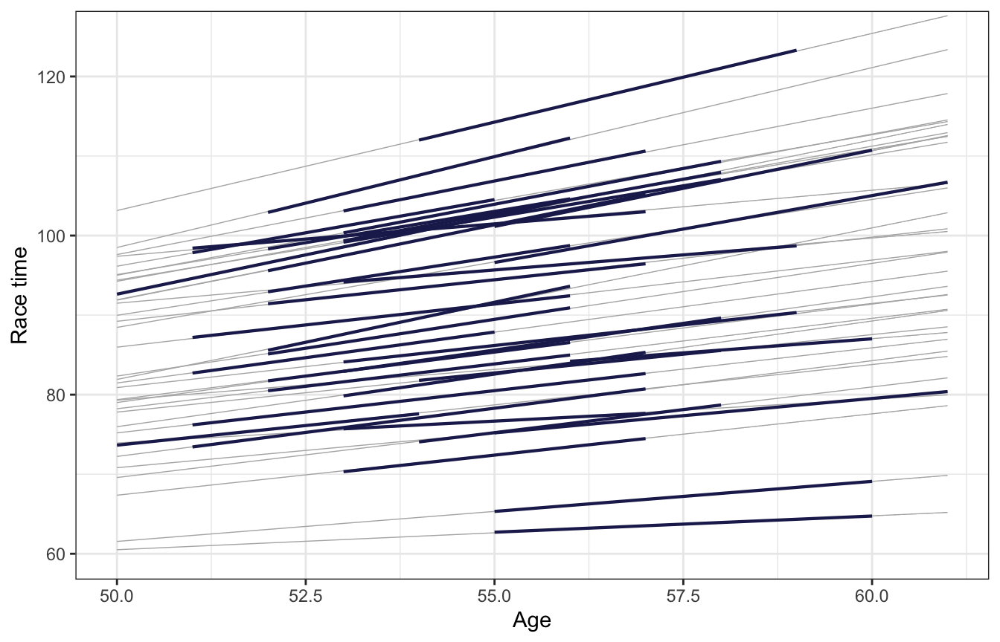
Within- and between-runner variability
Finally we can look at all the \(\sigma\) terms. We have a bunch now:
- \(\sigma_y\) (
sd__Observation): the variability within runners - \(\sigma_0\) (
sd__(Intercept)for therunnergroup): the variability between runners’ baseline averages, or the variability around the \(b_{0_j}\) offsets - \(\sigma_1\) (
sd__age_cfor therunnergroup): the variability between runners’ age effects, or the variability around the \(b_{1_j}\) offsets
model_running2_brms |>
tidy(effects = c("ran_pars"), conf.level = 0.8) |>
select(-component)
## # A tibble: 4 × 7
## effect group term estimate std.error conf.low conf.high
## <chr> <chr> <chr> <dbl> <dbl> <dbl> <dbl>
## 1 ran_pars runner sd__(Intercept) 13.3 1.70 11.2 15.5
## 2 ran_pars runner sd__age_c 0.796 0.355 0.324 1.25
## 3 ran_pars runner cor__(Intercept).age_c 0.474 0.303 0.0991 0.829
## 4 ran_pars Residual sd__Observation 5.04 0.325 4.63 5.47model_running2_rstanarm |>
tidy(effects = c("ran_pars"),
conf.int = TRUE, conf.level = 0.8)
## # A tibble: 4 × 3
## term group estimate
## <chr> <chr> <dbl>
## 1 sd_(Intercept).runner runner 12.9
## 2 sd_age_c.runner runner 0.989
## 3 cor_(Intercept).age_c.runner runner 0.447
## 4 sd_Observation.Residual Residual 5.03- \(\sigma_y\) (or
sd__Observation) is 5.04, which means that within any runner, their race times vary by 5 minutes around their individual race time average. - \(\sigma_0\) (or
sd__(Intercept)for therunnergroup) is 13.25, which means that average runner speeds vary or bounce around by 13 minutes across runners. - \(\sigma_1\) (or
sd__age_cfor therunnergroup) is 0.8, which means that average age effects vary by 0.8 minutes across runners.
We could try to decompose this variation by squaring these \(\sigma\)s and calculating ratios, but with random slopes, the math for this gets too hard if we want to incorporate slope information or details from additional groups (if we had another grouping level). performance::icc() even yells at us about it:
performance::icc(model_running2_brms, by_group = TRUE)
## Warning: Model contains random slopes. Cannot compute accurate ICCs by group factors.
## # ICC by Group
##
## Group | ICC
## --------------
## runner | 0.859We can look at the overall ICC instead, which tells us the percent of the total variation that comes from between-runner differences
performance::icc(model_running2_brms, by_group = FALSE)
## # Intraclass Correlation Coefficient
##
## Adjusted ICC: 0.878
## Unadjusted ICC: 0.838Finally, we also have an estimate for \(\rho\) (cor__(Intercept).age_c for the runner group), or the correlation between the runner-specific slopes and intercepts. Here it’s 0.47, which seems large! And substantially different from what the book has (-0.09). That’s weird. I think it’s because I’m using the centered version of age here and they don’t, so the intercept term is on a different scale in my models? Also, I’m not too concerned—brms provides credible intervals for this \(\rho\) term (rstanarm doesn’t seem to?), and there’s an 80% chance that the correlation between the runner-specific slopes and intercepts is between 0.1 and 0.83, which is a huge window.
Contrary to the book, then, it seems that runners that start slower slow down faster over time. For fun, we can look at the relationship between \(\rho\) and \(\beta_{0_j}\) for each runner. It’s positive—as the intercept increases, the correlation between the intercept and slope increases.
running2_slope_int_cor <- model_running2_brms |>
spread_draws(b_Intercept, b_age_c, r_runner[runner, term]) |>
pivot_wider(names_from = "term", values_from = r_runner) |>
mutate(runner_intercept = b_Intercept + Intercept,
runner_age = b_age_c + age_c) |>
group_by(runner) |>
summarize(correlation = cor(runner_intercept, runner_age),
across(c(runner_intercept, runner_age), ~median(.)))
running2_slope_int_cor |>
ggplot(aes(x = runner_intercept, y = correlation)) +
geom_point() +
geom_smooth(method = "lm", se = FALSE, color = clrs[1]) +
labs(x = "β<sub>0<sub>j</sub></sub>", y = "ρ") +
theme(axis.title.x = element_markdown())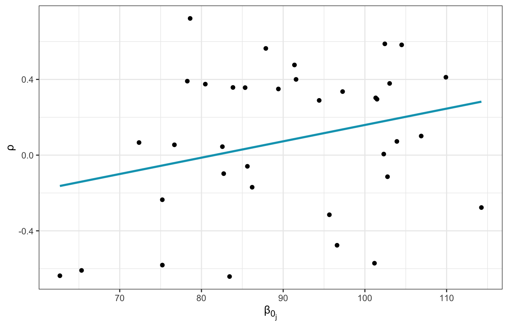
17.4: Model evaluation & selection
Phew we’ve done a ton of modeling work here, with a completely pooled model, a model with just random intercepts, and a model with random intercepts and random slopes. They all fit the data in different ways:
p1 <- running |>
add_linpred_draws(model_complete_pooling_brms, ndraws = 100) |>
summarize(.linpred = mean(.linpred)) |>
ggplot(aes(x = age, y = net)) +
geom_line(aes(y = .linpred, group = runner),
size = 1, color = clrs[2]) +
coord_cartesian(ylim = c(60, 125)) +
labs(x = "Age", y = "Race time",
title = "Completely pooled model")
p2 <- running |>
add_linpred_draws(model_running1_brms, ndraws = 100) |>
summarize(.linpred = mean(.linpred)) |>
ggplot(aes(x = age, y = net)) +
geom_line(aes(y = .linpred, group = runner),
size = 0.5, color = clrs[3]) +
coord_cartesian(ylim = c(60, 125)) +
labs(x = "Age", y = NULL,
title = "Random intercepts only")
p3 <- running |>
add_linpred_draws(model_running2_brms, ndraws = 100) |>
summarize(.linpred = mean(.linpred)) |>
ggplot(aes(x = age, y = net)) +
geom_line(aes(y = .linpred, group = runner),
size = 0.5, color = clrs[6]) +
coord_cartesian(ylim = c(60, 125)) +
labs(x = "Age", y = NULL,
title = "Random intercepts and slopes")
p1 | p2 | p3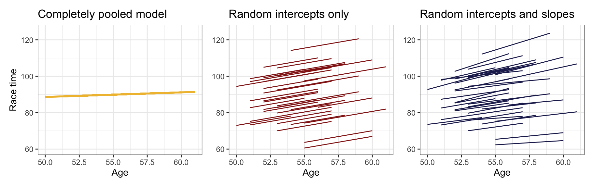
To evaluate which of these is best, we need to ask our three questions:
1: How fair is each model?
They’re all equally fair and good.
2: How wrong is each model?
For this we can look at posterior predictive checks:
p1 <- pp_check(model_complete_pooling_brms, ndraws = 25, type = "dens_overlay") +
labs(x = "Running time", title = "Completely pooled model") +
guides(color = "none") +
coord_cartesian(xlim = c(45, 135))
p2 <- pp_check(model_running1_brms, ndraws = 25, type = "dens_overlay") +
labs(x = "Running time", title = "Random intercepts only") +
guides(color = "none") +
coord_cartesian(xlim = c(45, 135))
p3 <- pp_check(model_running2_brms, ndraws = 25, type = "dens_overlay") +
labs(x = "Running time", title = "Random intercepts and slopes") +
coord_cartesian(xlim = c(45, 135))
p1 | p2 | p3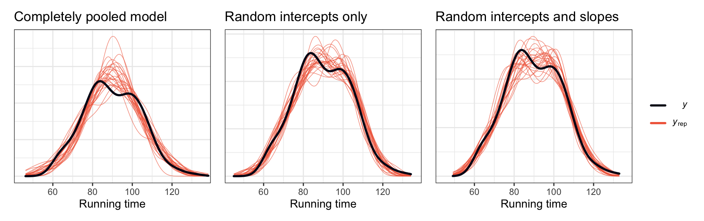
The models with the random effects definitely fit the underlying data better, but it doesn’t look like there’s a huge difference between the random intercepts-only model and the model with random intercepts and slopes.
We also know from earlier that the models give different estimates for the age effect. In the pooled model it’s not “significant”; in the multilevel models it is.
3: How accurate are each model’s predictions?
In Bayes Rules! they look at predictive accuracy a few different ways: mean average predictions, k-fold cross validation, and ELPD/LOO values. I’m going to skip those first two because they don’t play nicely with brms models and instead just look at ELPD. There’s no huge difference between the predictive densities. Based on that, the Bayes Rules! authors conclude by choosing the model with random intercepts only, mostly for the sake of parsimony and simplicity. Adding the random slopes doesn’t really help with the estimates or the accuracy (though it does make prettier pictures), so it’s best to work with a simpler version of the model with fewer moving parts to worry about.
loo_stats <- tribble(
~model_name, ~model,
"Completely pooled model", model_complete_pooling_brms,
"Random intercepts only", model_running1_brms,
"Random intercepts and slopes", model_running2_brms
) |>
mutate(loo = map(model, ~loo(.))) |>
mutate(loo_stuff = map(loo, ~as_tibble(.$estimates, rownames = "statistic"))) |>
select(model_name, loo_stuff) |>
unnest(loo_stuff) |>
filter(statistic == "elpd_loo") |>
arrange(desc(Estimate))
loo_stats
## # A tibble: 3 × 4
## model_name statistic Estimate SE
## <chr> <chr> <dbl> <dbl>
## 1 Random intercepts and slopes elpd_loo -589. 18.0
## 2 Random intercepts only elpd_loo -590. 17.5
## 3 Completely pooled model elpd_loo -753. 8.69loo_stats |>
mutate(model_name = fct_rev(fct_inorder(model_name))) |>
ggplot(aes(x = Estimate, y = model_name)) +
geom_pointrange(aes(xmin = Estimate - 2 * SE, xmax = Estimate + 2 * SE)) +
labs(x = "ELPD", y = NULL)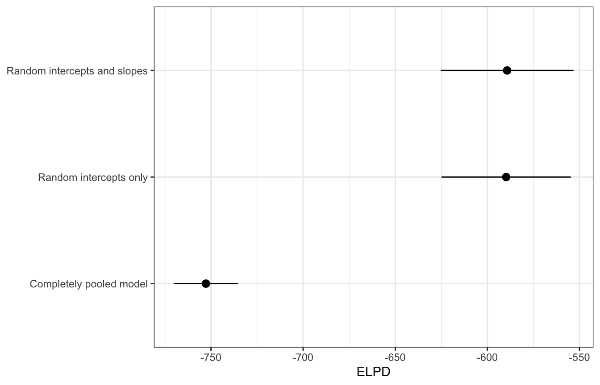
loo_compare(loo(model_complete_pooling_brms),
loo(model_running1_brms),
loo(model_running2_brms))
## elpd_diff se_diff
## model_running2_brms 0.0 0.0
## model_running1_brms -0.5 3.1
## model_complete_pooling_brms -163.4 17.517.5: Posterior prediction
Like we did in chapter 16, we can use the posteriors here to generate predictions, both for existing runners and for completely new runners. We’ll use posterior_predict() (technically its tidybayes wrapper predicted_draws()) with re_formula = NULL to incorporate the random effects, allow_new_levels to allow it to make predictions for Miles, and sample_new_levels = "gaussian" to draw the random offsets in slopes and intercepts from a normal distribution.
Note how the predictions for Miles here are really wide. We don’t know much about him, so the predictions really just reflect a bunch of randomness around the global mean race time.
model_running2_brms |>
predicted_draws(tibble(runner = c("1", "Miles", "10"),
age_c = 61 - unscaled$age_c$scaled_center),
re_formula = NULL, allow_new_levels = TRUE,
sample_new_levels = "gaussian") |>
ungroup() |>
mutate(runner = fct_inorder(runner)) |>
ggplot(aes(x = .prediction, y = runner, fill = runner)) +
scale_fill_manual(values = c(clrs[1], clrs[3], clrs[6])) +
stat_halfeye() +
labs(x = "Predicted race time", y = NULL, fill = "Runner")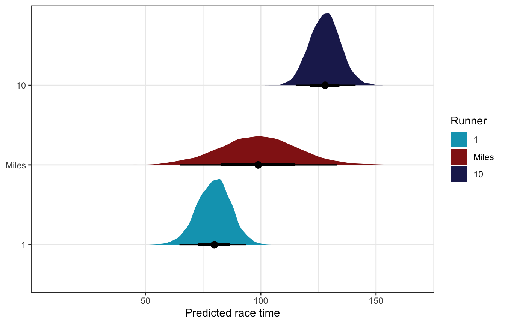
Since we modeled it as a random effect, we can also do some neat things with the age effect in the posterior predictions. Runner 1’s time doesn’t really change as they age; Runner 10 slows down substantially over time. Miles has a slight increase in running time over the years, since the effect is really just a bunch of randomness around the global \(\beta_1\) effect.
model_running2_brms |>
predicted_draws(expand_grid(runner = c("1", "Miles", "10"),
age_c = seq(50, 62, by = 2) - unscaled$age_c$scaled_center),
re_formula = NULL, allow_new_levels = TRUE,
sample_new_levels = "gaussian") |>
mutate(age = age_c + unscaled$age_c$scaled_center) |>
ungroup() |>
mutate(runner = fct_inorder(runner)) |>
ggplot(aes(x = .prediction, y = factor(age), fill = runner)) +
scale_fill_manual(values = c(clrs[1], clrs[3], clrs[6]), guide = "none") +
stat_slab(height = 2, slab_color = "white", slab_size = 0.25) +
labs(x = "Predicted race time", y = "Age", fill = "Runner") +
facet_wrap(vars(runner)) +
theme(panel.grid.major.y = element_blank())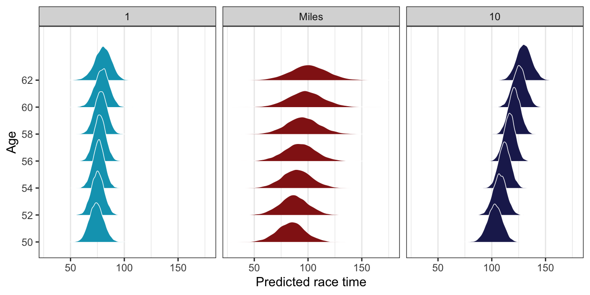
17.6: Spotify and dancibility
HOLY COW this chapter has been long and difficult and I’m tired. In the book they do one more example with the Spotify data with two models:
danceability ~ valence + genre + (1 | artist)danceability ~ valence + genre + (valence | artist)
I’m not going to recreate their stuff with brms here (for now; maybe someday I’ll come back and do that). See that section for complete details.